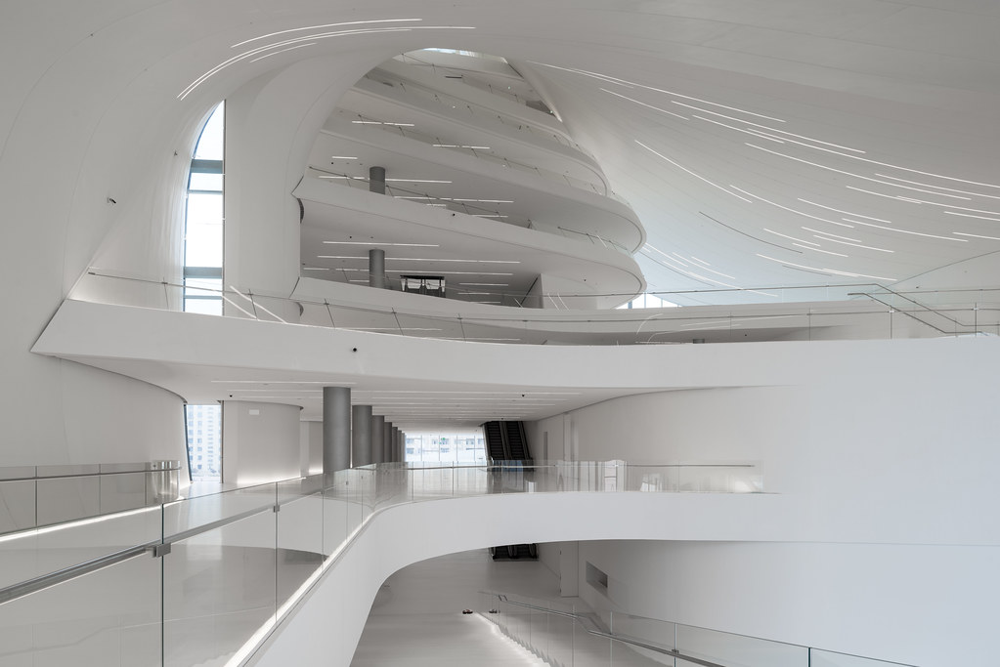
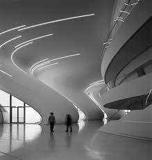

œuvres
Le Centre culturel Heydar-Aliyev à Bakou, Azerbaïdjan
Le Centre culturel Heydar-Aliyev à Bakou, Azerbaïdjan, est une réalisation architecturale exceptionnelle conçue par Zaha
Hadid.



Intérieur du Centre culturel Heydar-Aliyev à Bakou, Azerbaïdjan